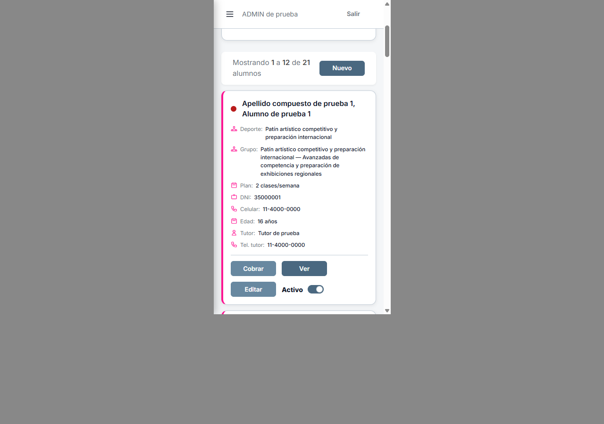
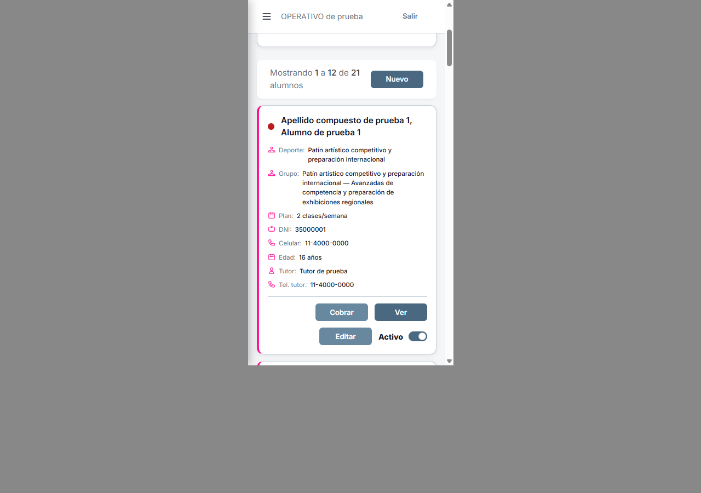
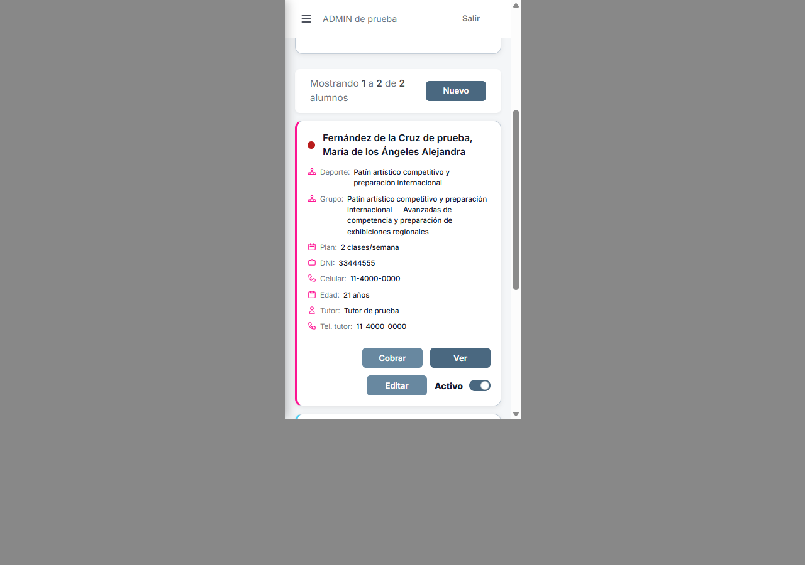

A7 · Controles a la derecha en celular
Ajuste posterior pedido por Carlos: Cobrar/Editar y Ver/Nuevo alineados; capturas nuevas. Este visor conserva el antecedente.
08/10/2026. Ajuste pedido por Carlos: alineación a derecha únicamente en celular. Las tres capturas de escritorio conservan exactamente la geometría anterior de tarjetas y botones. Implementado localmente; revisión independiente del paquete pendiente.
Celular · ADMIN · Antes / Después



Celular · OPERATIVO

Celular · Nombre largo

Escritorio · ADMIN

Escritorio OPERATIVO · Escritorio, nombre largo · Login de control · Mediciones.


Imágenes reales de Wings con datos ficticios de wings_testing_codex. Marco iframe 375×667 dentro de Chrome 1280×900; todos los controles alcanzables sin recorte horizontal. Tres botones de 96×32 px conservados. CSS exclusivo de Alumnos, bajo 640 px. No se cambiaron los componentes ni sus acciones.